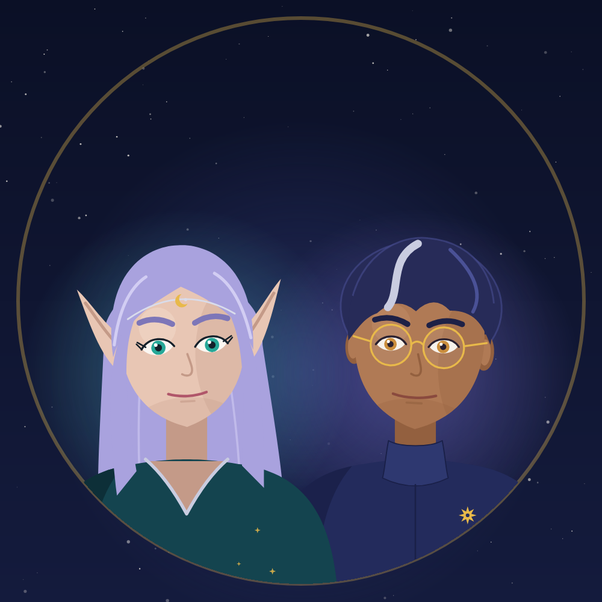

O Céu Avisa
astrologia e tarô sobre o mundo
Um canal de astrologia mundana e tarô sobre o mundo: 2027, os signos, as regiões que os eclipses atravessam e os acontecimentos da semana lidos pelo céu do momento.
Quem apresenta é a dupla Tales e Lira. O Tales lê o céu: mapas, trânsitos e ciclos calculados com efemérides reais. A Lira lê as cartas: a tiragem é sorteada pelo código, com a semente na tela, e nunca escolhida para caber na história.
Toda semana: o céu da semana (segunda), um fato do mundo em contexto (terça), 2027 e as regiões (quinta) e a série “2027 signo a signo” (quarta, sexta e sábado). Aos domingos, uma análise longa.
Astrologia e tarô são tradição simbólica, para reflexão e entretenimento. O canal não prevê morte, doença ou resultado de eleição, não dá palpite de aposta e é apartidário. Os apresentadores são personagens de IA e todo vídeo é marcado como conteúdo gerado por IA.
Política de privacidade · Termos de uso · Contato: oceuavisa@gmail.com